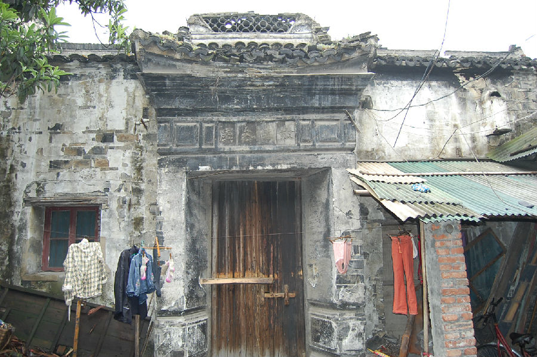

嘉兴市文物保护网 · 市级文物保护点 · 2020-11-09 · 原文

桥东街21号顾氏民宅位于嘉兴市南湖区解放街道桥东街21号，西临太平桥河，共三进，占地面积455平方米，通面阔15米，通进深30.31米。每进为四开间，砖木结构，地面铺设方砖。沿街第一进为二层楼房，内部梁架不详。第二进为平房，层高较高，原为厅堂，抬梁式结构，五檩，前后单步，用四柱，檐口有吊板花窗。第三进为二层楼房，房内无法进入，梁架结构不详。第二进与第三进之间有砖雕门楼，每进间各有天井，天井内铺设长条石。原还有第四进，为厨房，现已坍塌。顾氏住宅规模较大，是嘉兴市区现存为数不多的传统民居之一，有一定的历史和科学价值。2010年公布为嘉兴市文物保护点。